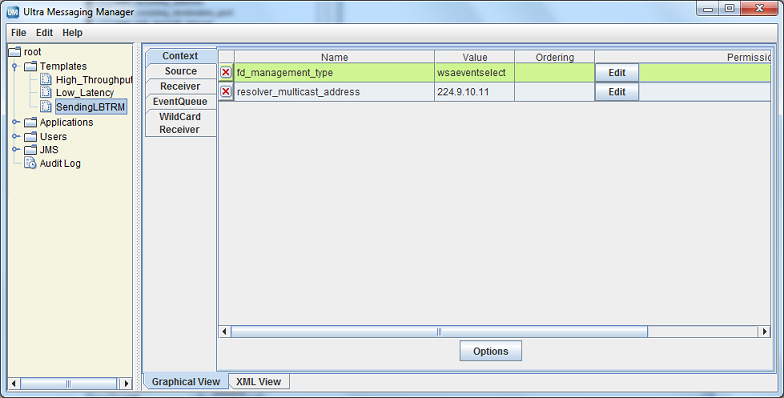
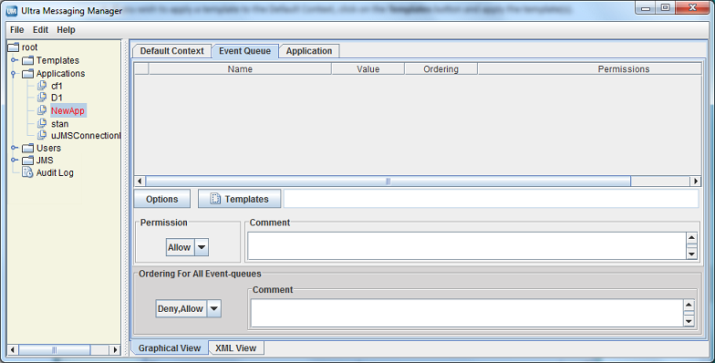
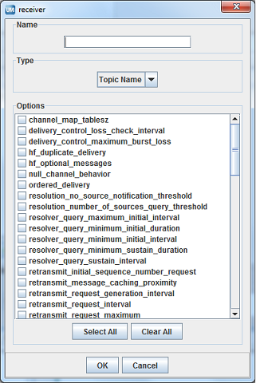

Ultra Messaging (Version 6.15)
[ Multi-page HTML ] | [ PDF ]
Introduction <-
The Ultra Messaging Manager ensures the consistency and reliability of enterprise production applications by enabling IT administrators to control what configurations messaging applications can use and what users can operate them. UM Manager employs a daemon (ummd) to serve license and configurations information to your applications. The UM Manager graphical interface (GUI) accesses the daemon via the UMM API. The UM Manager GUI also simplifies UM configuration by providing the flexibility to configure applications in highly similar or divergent ways.
For policies and procedures related to Ultra Messaging Technical Support, see UM Support.
(C) Copyright 2004,2022 Informatica LLC. All Rights Reserved.
This software and documentation are provided only under a separate license agreement containing restrictions on use and disclosure. No part of this document may be reproduced or transmitted in any form, by any means (electronic, photocopying, recording or otherwise) without prior consent of Informatica LLC.
A current list of Informatica trademarks is available on the web at https://www.informatica.com/trademarks.html.
Portions of this software and/or documentation are subject to copyright held by third parties. Required third party notices are included with the product.
This software is protected by patents as detailed at https://www.informatica.com/legal/patents.html.
The information in this documentation is subject to change without notice. If you find any problems in this documentation, please report them to us in writing at Informatica LLC 2100 Seaport Blvd. Redwood City, CA 94063.
Informatica products are warranted according to the terms and conditions of the agreements under which they are provided.
INFORMATICA LLC PROVIDES THE INFORMATION IN THIS DOCUMENT "AS IS" WITHOUT WARRANTY OF ANY KIND, EXPRESS OR IMPLIED, INCLUDING WITHOUT ANY WARRANTIES OF MERCHANTABILITY, FITNESS FOR A PARTICULAR PURPOSE AND ANY WARRANTY OR CONDITION OF NON-INFRINGEMENT.
See UM Glossary for Ultra Messaging terminology, abbreviations, and acronyms.
- Note
- The UM Manager Daemon (ummd) and the UM Manager GUI are not supported on the OpenVMS platform.
UM Manager Overview <-
Some of the highlights of the UM Manager include the following:
-
Implements Ultra Messaging configuration with an XML file(s).
-
Provides a graphical interface (GUI) to create and edit XML configuration files.
-
Allows configuration by topic name, context name, event queue name, or wildcard pattern.
-
Allows restriction of option values to a range or ranges of values.
-
Allows you to restrict the creation of Ultra Messaging objects such as contexts, source topics, receiver topics, event queue names, or wildcard patterns.
-
Lets you define configuration templates, which can overlap and override one another.
-
Retrieves configuration from a ummd, or via an API call, or via an environment variable (in that order).
-
Preserves the existing Ultra Messaging configuration APIs (lbm_config(),
*_attr_setopt(), etc).
The diagram below illustrates the architecture of the UM Manager:

Manager Components <-
UMM consists of the following components:
-
UMM GUI - Graphical user interface for creating and editing XML configuration files. The UMM GUI requires Java Version 1.6.x. Communicates with ummd via the UMM GUI API. See UMM GUI Overview.
-
UMM GUI API - Used to create the UM GUI and provides all access to the configuration database. You can use the API to programmatically create and store configuration templates and application configurations, bypassing the UMM GUI. See UMM API Overview and UMM Java API.
-
ummd - Serves XML configuration information and Ultra Messaging license information to Ultra Messaging applications. Communication between ummd and your applications can be secured with SSL. See UMM Daemon Overview.
- Configuration Database - Database that stores all XML configuration files created in the UMM GUI or created programmatically. UMM supports MySQL and Oracle databases using JDBC. See Configuring the UMM Database.
Using the UMM GUI <-
You can use the UMM GUI to create XML format configuration files if you do not want to create them manually with an XML editor. UMM stores any configuration information you create with the UMM GUI in the UMM configuration database. Normally, UM applications contact the UMM Daemon to obtain their configuration information. However, the GUI also offers a method to dump the XML data to a file which could be loaded by an UM application without involving the daemon.
See UMM Daemon Overview for information about starting the UMM daemon and GUI.
Using UMM With a UM Application <-
The following procedure describes a general approach to using UMM to serve license and configuration values to your applications. This procedure contains general guidelines for configuring UM for the application SENDAPP.
-
Start the UMM Daemon and the UMM GUI. See UMM Daemon Overview.
-
Create any desired templates to hold configuration option values shared by multiple applications or primitive UM objects (context, source, receiver, wildcard receiver or event queue). See Creating Configuration Templates.
You can create and apply multiple templates to applications and primitive UM objects, however, if the same option appears in multiple templates, the option value in the last template overrides the option value in the previous template. See Applying Templates.
-
Create an application for your UM application and apply any relevant templates created in the previous step. Just for this example, name the application, SENDAPP. See Creating Application Configurations.
-
For the SENDAPP application, configure the application's default context by applying any relevant templates and setting context option values.
-
Since our example application, SENDAPP is a sending application, also configure its Source options. See Configuring Sources. (If this was a receiving application, you would configure Receiver or Wildcard Receiver options.)
-
If your application creates multiple contexts, repeat the previous two steps for each context.
-
Configure the default Event Queue for SENDAPP, applying any relevant template and setting option values.
-
Assign user Admin to SENDAPP and give it the password,
secret. See Managing Users. -
Set the following environment variable on the machine where SENDAPP runs.
set LBM_UMM_INFO to SENDAPP:Admin:secret@10.29.3.95:21273See also Connecting Your Applications to the UMM Daemon. - Start SENDAPP.
UMM Menus <-
The following table explains the UMM menu selections:
| Menu | Selection | Description |
|---|---|---|
| File | New | Allows you to create a new Application, Template or User. |
| File | Save | Saves the current Application, Template or User record. |
| File | Save All | Saves all the records that you have created or edited. |
| File | Revert | Revert to the previously saved version of the Application, Template or User. |
| File | Save To File | Save the Application, Template or User record to an XML file instead of the database. This selection allows you to use the UMM GUI to configure applications but not use UMM Daemon when running your applications. After saving an application's configuration to a file, you can use the |
| File | Exit | Close the UMM GUI. |
| Edit | Duplicate | Copy the selected Application, Template or User record to a new record. |
| Edit | Delete | Delete the selected Application, Template or User record(s). |
Creating Configuration Templates <-
You can define option templates that can be applied in application configurations. Multiple templates can be applied to any primitive UM object or application. Templates can be applied to most tags including '<application>', '<contexts>', '<context>', '<sources>', '<receivers>', '<topic>', and '<wildcard-receivers>'.
-
Click on Templates in the object tree in the left pane and then right-click or click on the File Menu.
-
Select New and then select Templates from the drop-down menu.
-
Enter the Template Name and click OK. The Template window appears in the right pane:
Template Window 
-
Click on the Context tab and then click on Options button. A list of Context scope options appears:
Context Options 
-
Click on the checkbox next to the desired context options. Click OK. The selected options appear in the Template/Context pane.
-
For each option, click on the Value field, select or enter a new value and press ENTER:
Setting Option Values  -
If desired, set permissions for the option's values. See Setting Permitted and Restricted Values.
-
Repeat Steps 4-7 for Source Options.
-
Repeat Steps 4-7 for Receiver Options.
-
Repeat Steps 4-7 for Event Queue Options.
-
Repeat Steps 4-7 for Wildcard Receiver Options.
-
Click XML View to verify your entries.
- Right click on the object name in the left pane or click on the File Menu. Then click Save.
Using the Order Attribute <-
Any option used in a template or directly configured for an application has an order attribute expressed with two values in one of two sequences:
or
The order attribute allows you to permit or restrict more than one value for the option. The order, allow,deny essentially means "allow what you specify,
deny everything else." The order, deny, allow means "deny what you specify, allow everything else." The default order is 'deny,allow'. If you specify nothing, the default rule executes, ignoring the option's default value. Order of appearance of rules is not significant.
Using the Deny,Allow Order <-
The example below allows any transport type except for LBT-IPC or LBT-RDMA.
The procedure below shows how to accomplish this in the UMM GUI. Refer to the composite screen image following the procedure.
-
For the source option, transport, click in the Ordering box and select '
Deny,Allow'. -
Click the Edit button. The Permissions Window appears.
-
Click Add and type LBT-IPC.
-
Click again on Add and type LBT-RDMA.
-
Click OK.
Permissions window 
Using the Allow,Deny Order <-
You could accomplish the same restriction shown in Using the 'Deny,Allow' Order with the next example.
The procedure below shows how to accomplish this in the UMM GUI. Refer to the composite screen image following the procedure.
-
For the source option, transport, click in the Ordering box and select '
Allow,Deny'. -
Click the Edit button. The Permissions Window appears.
-
Click Add and type TCP.
-
Click again on Add and type TCP-LB.
-
Click Add and type LBT-RU.
-
Click again on Add and type LBT-RM.
-
Click OK.
Permissions Window 
Setting Permitted and Restricted Values <-
-
To use the Order attribute for an option, click on the Order field and select either Allow,Deny or Deny,Allow (default).
-
Click on the Edit button in the Permissions column. The Permissions dialog box appears.
-
To add an option value with a specific permission, click Add. A permission row appears.
-
Select the permission from the Allow,Deny column.
-
Enter the option value in the Value column.
-
Repeat Steps 3-5 for each additional option value that requires specific permissions.
-
Click OK. The Permissions dialog box disappears and your entries appear in the Permission column for the option.
-
Click XML View to verify your entries.
- Right click on the object name in the left pane or click on the File Menu. Then click Save.
Options with Value Ranges <-
Some options can specify a range of values. You can specify both allow and deny rules to allow one or more values of a larger range. The next example allows a single multicast address out of a range of otherwise allowable addresses.
Address 239.191.10.15 matches both an allow and deny rule, but since the order indicates that allow is the default, the value is allowed.
Creating Application Configurations <-
You can configure UM Configuration Options for specific applications. You can attach a template or select any number of individual options. Separate applications can have the same options, but with different values. You can also configure an application with multiple contexts or event queues and apply an order attribute to easily vary similar configurations.
-
Click on Applications in the object tree in the left pane and then right-click or click on the File Menu.
-
Select New and then select Application from the drop-down menu.
-
Enter the Application Name and click OK. The initial, blank Application window appears.
New Application Window 
-
Click on the Application tab. The Application window appears.
Application Window 
-
Add the additional contexts and event queues required by this application.
- Click on the Add button and enter the context's or event queue's name.
- Click OK.
- Repeat the above steps for every additional context and event queue.
-
If you wish to apply a template to the application, click on the Templates button. The Templates window appears.
Templates Window 
See Applying Templates.
-
Click on the Comment text window and enter any notes or comments about the application.
-
Click on the Default Context tab.
Default Context Window 
-
If needed, change the default Ordering for All Contexts to '
allow,deny'. See also Using the Order Attribute. -
Configure the application's Default Context.
- If you wish to apply a template to the Default Context, click on the Templates button and apply the template(s).
- Configure the Sources. See Configuring Sources.
- Configure the Receivers. See Configuring Receivers.
- Configure any Wildcard Receivers. See Configuring Wildcard Receivers.
- Configure the options for the Default Context by clicking on the Options button and selecting the options. See Creating Configuration Templates for more on configuring options.
- Set the Rule attribute, if needed.
-
Repeat the above step for all contexts in the application.
-
Click on the Event Queue tab. The Event Queue window appears.
Event Queue Window  -
If needed, change the default Ordering for All Event-queues to '
allow,deny'. See also Using the Order Attribute. -
Configure the application's Default Event Queue.
- If you wish to apply a template to the Default Event Queue, click on the Templates button and apply the template(s) queue's name.
- Configure the options for the Default Event Queue by clicking on the Options button and selecting the options. See Creating Configuration Templates for more on configuring options.
- Set the Rule attribute, if needed.
-
Repeat the above step for all Event Queues used in the application.
-
Right click on the object name in the left pane or click on the File Menu. Then click Save All.
- Click on the XML View tab to review the actual XML configuration for the application. (Template options and values do not appear in this view.)
Configuring Sources <-
You can configure an individual UM source using a topicname or a topic pattern. Configuring a pattern allows you to easily specify option values for all the topics that match the pattern instead of configuring individual topics (topicname) with the same options and values. (You could also apply a template to the context that has all the source scope option values.) When using a topic pattern, the following rules apply:
- Topics that match both a topicname and a topic pattern use the option values from the more specific match, i.e. the topicname.
-
If multiple patterns match a given topic, UMM uses the first pattern matched in the XML configuration file. In the example below, when your application creates a source for topic SRM, it will use the LBTRM transport, which is configured for the first pattern, '
*R*', and not the TCP transport which is configured for the second pattern, '*RM'.<sources order="deny,allow"><topic pattern="*R*" rule="allow"><options type="source"><option default-value="lbtrm" name="transport"/></options></topic><topic pattern="*RM" rule="allow"><options type="source"><option default-value="tcp" name="transport"/></options></topic></sources>Use the following procedure to configure options for an individual UM source:
-
Click on the Sources tab on the left of the context pane. An empty Sources window appears.
Sources Tab 
-
If needed, change the default Ordering for All Sources to
'allow,deny'. See also Using the Order Attribute. -
Click on the Add button. The Source window appears.
Source Window -
Enter the topicname or a topic pattern.
-
Select the Type, Topic Name or Pattern from the drop-down menu.
-
Click on the checkbox next to the desired options for the topic or pattern. Click OK. The Sources window appears with the selected options.
Sources Window 
-
Adjust the option values. See Creating Configuration Templates for more on configuring options.
-
If you wish to apply a template to the source, click on the Templates button and apply the template(s).
-
Set the Rule attribute, if needed.
- Repeat Steps 3-9 for all topics and topic patterns for the context.
-
Configuring Receivers <-
Use the following procedure to configure options for an individual UM receiver:
-
Click on the Receivers tab on the left of the context pane. An empty Receivers window appears.
Receivers Tab 
-
If needed, change the default Ordering for All Receivers to '
allow,deny'. See also Using the Order Attribute. -
Click on the Add button. The Receiver window appears.
Receiver Window  -
Enter the topicname or a topic pattern.
-
Select the Type, Topic Name or Pattern from the drop-down menu.
-
Click on the checkbox next to the desired options for the topic or pattern. Click OK. The Receivers window appears with the selected options.
Receivers Window 
-
Adjust the option values. See Creating Configuration Templates for more on configuring options.
-
If you wish to apply a template to the source, click on the Templates button and apply the template(s).
-
Set the Rule attribute, if needed.
- Repeat Steps 3-9 for all receiver topics and topic patterns for the context.
Configuring Wildcard Receivers <-
To apply XML configuration to a wildcard receiver, be sure both the pattern and pattern-type match exactly. You may also specify both receiver and wildcard receiver options.
Use the following procedure to configure options for an individual UM wildcard receiver:
-
Click on the Wildcard Receivers tab on the left of the context pane. An empty Wildcard Receivers window appears.
Wildcard Receivers Window 
-
If needed, change the default Ordering for All Wildcard-receivers to '
allow,deny'. See also Using the Order Attribute. -
Click on the Add button. The Wildcard Receivers window appears.
Wildcard Receiver Window 
-
Enter the wildcard receiver Pattern.
-
Select the Pattern Type, pcre, regex or appcb from the drop-down menu. See pattern_type for more information about these option values.
-
Click on the checkbox next to the desired options for the topic or pattern. Click OK. The Wildcard Receivers window appears with the selected options.
Wildcard Receiver Options Window 
-
Adjust the option values. See Creating Configuration Templates for more on configuring options.
-
If you wish to apply a template to the source, click on the Templates button and apply the template(s).
-
Set the Rule attribute, if needed.
- Repeat Steps 3-9 for all wildcard receiver patterns for the context.
Applying Templates <-
The Templates dialog box allows you to apply templates to applications or any primitive UM object and also to remove templates or change the order.

-
To apply a template, click on the Template Name in the left pane and click the Right Arrow. The template appears in the right pane. You can also hold down the Ctrl key to select multiple templates.
-
To remove a template already applied, click on the Template Name in the right pane and click the Left Arrow. The template disappears from the right pane.
- To change the order of the applied templates, click on the Template Name in the right pane and click the Up Arrow or Down Arrow to reposition the template.
You can apply multiple templates to applications or any primitive UM object. The order in which you attach templates determines the resolution of conflicting option values. The last instance of an option determines the value used. In the UMM GUI, this means the lowest option instance in the file.
Managing Users <-
You can authenticate the users of your applications by adding them to the User List and assigning applications to them. UMM does not serve configuration information to an application without the proper user authentication. See also UMM Daemon Overview.
UMM comes with a Default User (username = default, password = default). The first time you start the UMM GUI, a prompt appears for the password of the Default User. When logged in as the Default User, you can change the Default User's password and other properties. You can also add other users. If you don't require extensive user authentication, you could assign all your applications to a single user.
Upon starting the UMM GUI for the first time, Informatica recommends that you either:
-
Change the password of the Default User, or
- Create a new administrative user, re-login as that new user and delete the Default User.
Changing the Default User Password <-
Use the following procedure to change the default user password:
-
Expand the Users object tree in the left pane.
-
Click on default. The Default User window appears.
Default User Window 
-
Click on the Change button. The New Password dialog box appears.
- Enter the new password and click on OK.
Adding Users <-
Follow the procedure below to add a new user:
-
Click on Users in the object tree in the left pane and then right-click or click on the File Menu.
-
Select New and then select User from the drop-down menu. The User Name dialog box appears.
-
Enter the User Name and click OK. The user profile dialog box appears.
-
Click in the Password entry box and enter the user's Password. (UMM hides the password after you save the user's record.)
-
Select the type of user, Normal or Admin.
-
Check the Active check box if the user is an active user.
-
Click on the Add button under the Applications entry box. A list of the configured applications appears.
-
Click on the applications this user has permission to run, holding down the Ctrl key to select multiple applications.
- Select Save from the File Menu.
UMM API Overview <-
The UMM API allows you to programmatically create and store application configurations in the UMM database. The UMM GUI uses the same API to create users, passwords, applications configurations and configuration templates. See UMM Java API for UMM objects, constructors and methods.
Programs that create application XML configurations store them in the UMM Configuration Database as shown in the diagram, Architecture for Programming Application Configurations. The UMM Daemon serves the XML configuration to UM applications.

The following sample code provides a framework for creating an application configuration, test_application with two templates. 'template_1' sets the file descriptor type option for a UM context. 'template_2' sets the resolver multicast address and port. Use of the application configuration is also authenticated with a username and password.
See <templates> and <applications> for more information about XML configuration elements. See also Creating Configuration Templates and Creating Application Configurations for information on creating templates and application configurations using the UMM GUI.
UMM Daemon Overview <-
The UMM Daemon serves license and configuration information to UM applications. A UMM Daemon requires either a umm.properties file or command line options. See ummd for information about the daemon's command line options. The UMM Daemon requires a license for either UMP or UMQ.
UMM Configuration <-
Follow the procedure below to configure UMM:
-
Edit the umm.properties File to specify your UMM database information, the daemon's port number and whether you will use SSL.
-
Edit the ummd.bat or ummd.sh File that starts UMM Daemon. The appropriate driver jar file name must be added to the classpath. Specify your certificate file or Java keystore information if using SSL certificates.
-
Edit the umm.bat or umm.sh File that starts the UMM GUI. The appropriate driver jar file name must be added to the classpath.
-
See Connecting Your Applications to the UMM Daemon to configure your applications with either environment variables or APIs so they can connect to UMM Daemon.
- Optional: see Securing UMM Daemon Communication with SSL to configure SSL.
umm.properties File <-
Contains database information such as the database username, password and driver. The simplest way to configure UMM is to edit this file to reflect your configuration database. The other two batch files or shell scripts automatically look to umm.properties for database information. This file, however, is optional. You could specify database information with options in the UMM Daemon and UMM GUI batch files or shell scripts. The umm.properties provided with installation appears below.
################## mySQL example ############################## LBM_LICENSE_FILENAME=lbm.lic database_password=admin database_jdbc_object=com.mysql.jdbc.Driver database_username=admin db_url=jdbc:mysql://10.29.3.112:3306/name secure="false" #Only used by ummd. port="15701" #Only used by ummd. ################## Oracle example ############################## #database_password=admin #database_jdbc_object=oracle.jdbc.driver.OracleDriver #database_username=system #db_url=jdbc:oracle:thin:@//localhost:1521/xe
ummd.bat or ummd.sh File <-
Specifies the needed information to run the UMM Daemon. By default, the ummd.bat/sh looks to umm.properties for database information. You can override the umm.properties file settings with ummd options. See the Man Page for ummd. See the installed files ummd.bat (Windows) or ummd.sh (Unix) for invocation examples.
umm.bat or umm.sh File <-
Specifies the needed information to run the UMM GUI. By default, the umm.bat/sh looks to umm.properties for database information. You can override the umm.properties file settings with ummd options. See the installed files umm.bat (Windows) or umm.sh (Unix) for invocation examples.
The same options available to the UMM Daemon (manpage for ummd) are also available for the umm.bat batch file and the umm.sh shell script. The following two options are also available:
- -a UMM username
- -b UMM password
These options allow the UMM GUI user to skip the username and password dialog box when starting the GUI, but limits you to one user. See Managing Users for information about creating users and assigning passwords and applications to them.
Connecting Your Applications to the UMM Daemon <-
To use UMM with your installation of Ultra Messaging, you must use the following environment variable for every application/user combination:
export LBM_UMM_INFO=application_name:user_name:password@ip:port
For example:
export LBM_UMM_INFO=lbmrcv:default:default@10.29.3.95:21273
-
At start up, your UM application contacts the UMM Daemon at the given ip and port. You can specify multiple daemon locations in comma-separated format. For example:
@10.29.3.11:21273,10.29.3.22:21273,10.29.3.33:21273
Your application tries to connect in a round robin fashion if the daemon with index 0 fails. -
If the connection succeeds, the UMM Daemon authenticates the connection with the user_name and password specified in the environment variable. (See Managing Users for information about creating users and assigning passwords and applications to them.)
-
Upon successful authentication, the UMM Daemon serves the license and configuration information associated with the user and application_name.
- The UMM Daemon closes the connection with your application.
You can specify the same information directly in your applications with the C API, lbm_set_umm_info(), and the Java API and .NET API, com::latencybusters::lbm::LBM::setUmmInfo(). These must be the first calls made by your applications.
Configuring the UMM Database <-
Informatica has demonstrated operation with JDBC interfaces to MySQL and Oracle databases. You may be able to use other JDBC databases, but Informatica has only tested with MySQL and Oracle.
Oracle Considerations <-
Informatica does not supply an Oracle database or any licensing to use Oracle. You can install an Oracle database either before or after installing UM. Drivers are not shipped with UM. The Oracle driver can be downloaded at http://www.oracle.com/technetwork/database/enterprise-edition/jdbc-10201-088211.html. The appropriate driver jar file name must be added to the classpath of the umm.bat/umm.sh and ummd.bat/ummd.sh scripts.
Configure Oracle with the following steps, which assume you have already installed UM:
-
Install Oracle and create a database. (You provide the UMM Daemon with the database name, username and password at start up. This user name and password should be kept secure.)
-
From the Oracle command line or database home page, log into your Oracle database.
-
From the Oracle command line or database home page, load /UMM/install_tables_oracle.sql. (This script installs the tables required by UMM.)
- From the Oracle command line or database home page, load /UMM/oracle_templates.txt. (This script loads the example configuration templates for low latency and high throughput. These templates appear in the UMM GUI under Templates in the object tree in the left pane.)
You can now start the UMM Daemon on the command line or with the ummd.bat batch file or the ummd.sh shell script.
MySQL Considerations <-
Informatica does not supply MySQL or any licensing to use MySQL. You can install MySQL either before or after installing UM. Drivers are not shipped with UM. The MySQL driver can be downloaded at http://dev.mysql.com/downloads/connector/j/5.0.html. The appropriate driver jar file name must be added to the classpath of the umm.bat/umm.sh and ummd.bat/ummd.sh scripts.
Configure MySQL with the following steps, which assume you have already installed UM:
-
Install MySQL.
-
Create a database. (You provide the UMM Daemon with the database name, username and password at start up. This user name and password should be kept secure.)
-
Log into the MySQL with connect db_name.
-
From the MySQL command prompt, run source /UMM/install_tables_mysql.sql. (This script installs the tables required by UMM.)
-
From the MySQL command prompt, run:
LOAD DATA INFILE 'mysql_templates.txt' INTO TABLE TEMPLATE;
(This script loads the example configuration templates for low latency and high throughput. These templates appear in the UMM GUI under Templates in the object tree in the left pane.)
You can now start the UMM Daemon on the command line or with the ummd.bat batch file or the ummd.sh shell script.
Securing UMM Daemon Communication with SSL <-
UMM allows you to secure the TCP transmission of UMM credentials and UM license keys between the UMM Daemon and UM applications using Secure Sockets Layer (SSL). You can implement a certificate-less, Transport Layer Security (TLS) option or provide your own certificate to authenticate the UMM Daemon. The following procedure explains how to secure UMM Daemon communications.
-
In the umm.properties, set the secure option to true.
secure=true
If you run the UMM Daemon from the command line, use -s true.
-
In the Connecting Your Applications to the UMM Daemon, pre-pend the application information with ssl:.
export LBM_UMM_INFO=ssl:lbmrcv:default:default@10.29.3.95:21273
-
To specify a certificate, insert the certificate path and filename as shown below. Be sure to also configure ummd.bat or ummd.sh with your keystore.
export LBM_UMM_INFO=ssl_cert_file=path/filename:lbmrcv:default:default@10.29.3.95:21273
A password for the certificate file is optional and would be specified as follows.
export LBM_UMM_INFO=ssl_cert_file=path/filename:ssl_cert_file_password=psswrd: lbmrcv:default:default@10.29.3.95:21273
You can specify the same information directly in your applications with the C API, lbm_set_umm_info(), and the Java API and .NET API, com::latencybusters::lbm::LBM::setUmmInfo(). These must be the first calls made by your applications.
See OpenSSL Dependency for information about the linkage between applications and the OpenSSL libraries.
Man Page for ummd <-
ummd -d JDBC Driver -h -n db username -p port -P properties filename -s true/false -u db url -x db password
- Description
- ummd provides UM Manager services.
- You can identify the database used to store configuration information with the -u db url option. This option accepts JDBC format for a MySQL database (i.e.
jdbc:mysql://10.29.3.112:3306/name) or an Oracle database (i.e.jdbc:oracle:thin:@//localhost:1521/xe). You can also set the database's username with the -n option, the database password with the -x, and the database driver with the -d. All options set on the ummd command line override any settings in the umm.properties file.
- You can set an alternate properties file with the -P where you can also specify database information. The default properties file is umm.properties.
- Command line help is available with -h.
- You can set the port for ummd with the -p option. The default is 15701.
- The -s option let you specify the use of SSL encryption for communication between ummd and your UM applications.
- Exit Status
- The exit status from ummd is 0 for success and some non-zero value for failure.